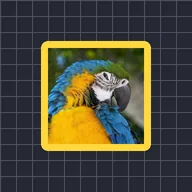

Contour

Trace un contour plein autour de l'extérieur de la forme du calque : Couleur règle sa couleur et Largeur son épaisseur en pixels.
Réglages
| Réglage | Type | Plage | Par défaut |
|---|---|---|---|
| Largeur | Nombre | De 0 px à 400 px | 5 px |
| Couleur | Couleur | – | #000000 |
| Style | Choix | Contour, Remplissage, Bandes | Contour |